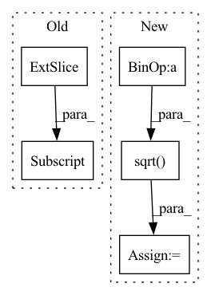

Pattern ID :4403
Before Change
A = box_a.size(0)
B = box_b.size(0)
anchor_centers = box_b[:, :2] .unsqueeze(0).expand(A, B, 2) // Shape [A, B, 2]
gt_boxes = box_a.unsqueeze(1).expand(A, B, 4)
left_right = torch.stack((anchor_centers[:,:,0]-gt_boxes[:,:,0], // x-x1
gt_boxes[:,:,2]-anchor_centers[:,:,0]), 2) // x2-xAfter Change
top_bottom = (top_bottom.min(dim=-1)[0] / top_bottom.max(dim=-1)[0])
top_bottom[top_bottom < 0] = 0 // points outside gt boxes
centerness = torch.min(left_right, top_bottom)
gt_sizes = torch.sqrt( (gt_boxes[:,:,2]-gt_boxes[:,:,0]) * (gt_boxes[:,:,3]-gt_boxes[:,:,1]))
thresh = ac_boxes[:,:,2] / 2.0
thresh[thresh == thresh.min()] = 0.0
centerness[gt_sizes <= thresh] = 0.0
thresh = ac_boxes[:,:,3] * 2.0In pattern: SUPERPATTERN
Frequency: 4
Non-data size: 5
Instances Fragment ID: 16185718
Project Name: zhanghengdev/mutualguide
Commit Name: 85219f93a8d5b54cb3ed9f06d86bb64d3f6d3552
Time: 2021-10-02
Author: heng.zhang@irisa.fr
File Name: utils/box/box_utils.py
M Class Name: AnonimousClass
N Class Name: AnonimousClass
M Method Name: centerness(2)
N Method Name: centerness(2)
M Parent Class:
N Parent Class:
M File Name: utils/box/box_utils.py
N File Name: utils/box/box_utils.py
M Start Line: 81
M End Line: 91
N Start Line: 41
N End Line: 59
Before Change
activation_index = len(self.activations) - self.grad_index - 1
activation = self.activations[activation_index]
values = torch.sum(activation * grad, dim=0, keepdim=True).sum(dim=2, keepdim=True).sum(dim=3, keepdim=True)[0, :, 0, 0] .data
// Normalize the rank by the filter dimensions
values = values / (activation.size(0) * activation.size(2) * activation.size(3))
if activation_index not in self.filter_ranks:After Change
if activation_index not in self.filter_ranks:
self.filter_ranks[activation_index] = torch.FloatTensor(activation.size(1)).zero_().to(env["device"])
values = values.abs()
values = values / torch.sqrt( torch.sum(values ** 2))
self.filter_ranks[activation_index] += values
self.grad_index += 1
Fragment ID: 16185716
Project Name: ain-soph/trojanzoo
Commit Name: 2c7f3682ae92a833ce2f3432fa643322eb2bbae5
Time: 2020-09-06
Author: ain-soph@live.com
File Name: trojanzoo/defense/backdoor/fine_pruning.py
M Class Name: FilterPrunner
N Class Name: FilterPrunner
M Method Name: compute_rank(2)
N Method Name: compute_rank(2)
M Parent Class:
N Parent Class:
M File Name: trojanzoo/defense/backdoor/fine_pruning.py
N File Name: trojanzoo/defense/backdoor/fine_pruning.py
M Start Line: 98
M End Line: 99
N Start Line: 75
N End Line: 82
Before Change
for conv in self.conv_layers:
x, h = conv(x)
if skips is None:
skips = h[..., self.l_diff:-self.l_diff]
else:
skips += h[..., self.l_diff:-self.l_diff]
x = skipsAfter Change
x, h = conv(x)
skips += h
skips *= math.sqrt( 1.0 / len(self.conv_layers))
x = skips
x = self.last_conv_layers(x)
Fragment ID: 16185708
Project Name: rishikksh20/hifigan-denoiser
Commit Name: 2cd22157c67cc9a85c42938f77b61b9f7f0b5798
Time: 2021-02-14
Author: rishikksh20@gmail.com
File Name: generator.py
M Class Name: Generator
N Class Name: Generator
M Method Name: forward(2)
N Method Name: forward(2)
M Parent Class: nn.Module
N Parent Class: nn.Module
M File Name: generator.py
N File Name: generator.py
M Start Line: 141
M End Line: 149
N Start Line: 113
N End Line: 118